A Birds Poem
By Phillip Le
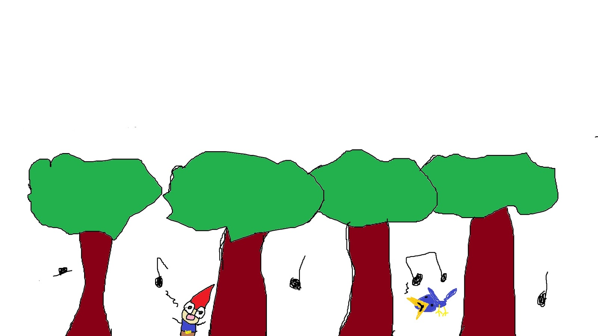
In a vast expanse of green, leafy trees, there stood, a lively bird neighborhood.
There you could hear a chorus of tweets.
The sounds were beautiful and poetic,
Making a subtle echo from far away.
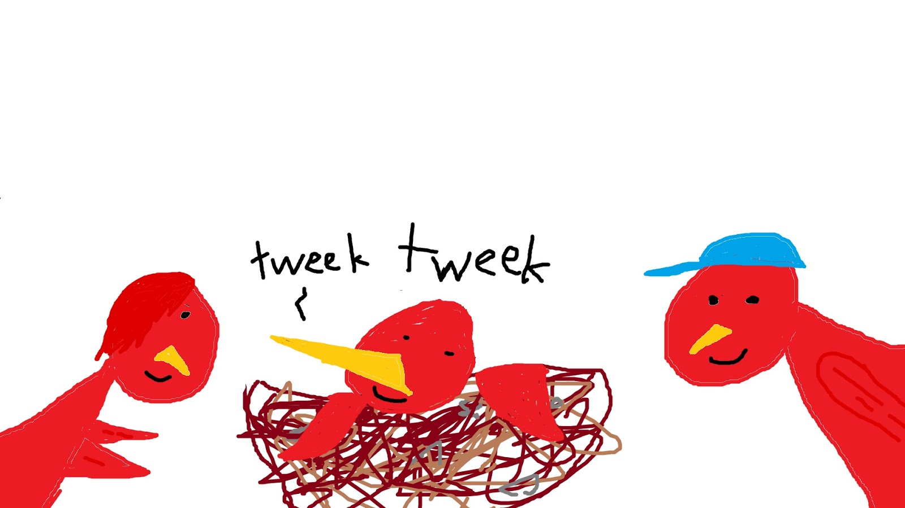
There, in the forest, lied a newborn hatchling
He was red, and small, and he went, “tweek tweek!”
Mama and papa were so happy, they sang a joyful song together.
Chirpy loved to bounce his head to the song as they cuddled together.
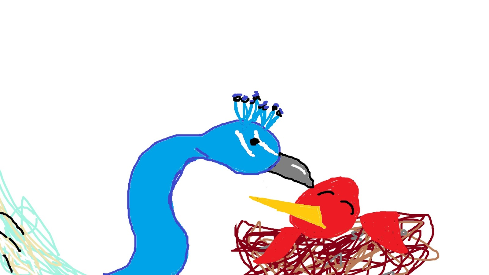
The next sunny day, a beautiful bird tweaked excitedly to see Chirpy.
When Chirpy opened his sleepy eyes, he was pleasantly surprised!
He never knew birds could look like that!
The colorful bird tweaked, “may I rustle his feathers?”
Chirpy’s parents nodded and the colorful bird rustled his baby feathers with his beak.
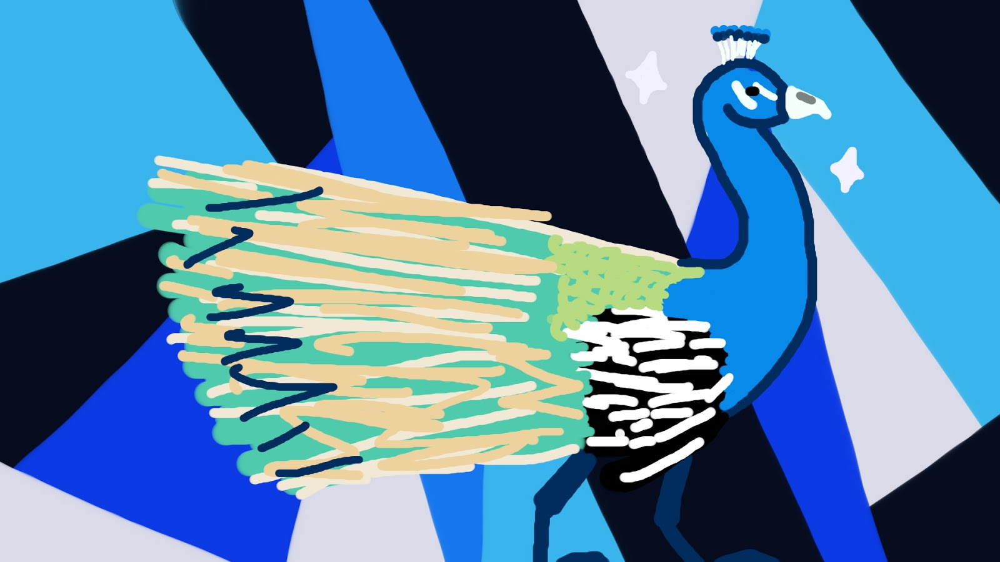
Majesty tweaked, “My name is Majesty! I will sing my poem of introduction!”
Reflections splash on my quills
My harmonic tweets sends chills
Majestic grace,
Lovely showcase,
I’ve the depth of many frills!
“And with that, I must fly away!”
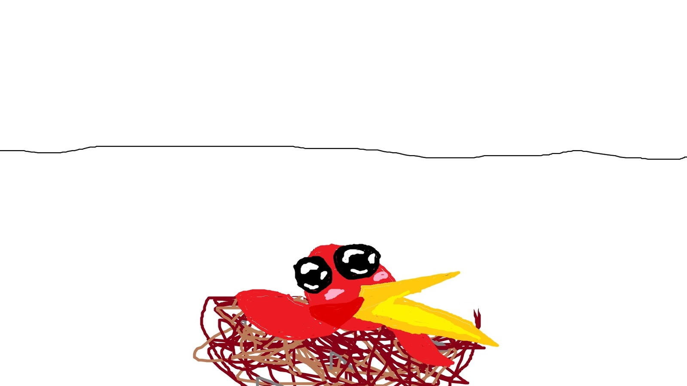
Chirpy was dumbstruck
Chirpy asked his parents, “are all the birds in the neighborhood like that?”
Mama bird laughed. She tweaked, “Majesty is a unique one, but so are all the birds in the neighborhood. You’ll have
fun meeting them when you can fly.”
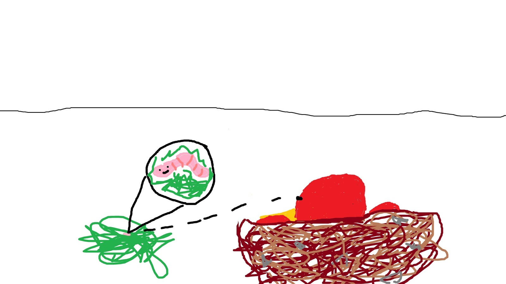
Days went on as Chirpy became bigger and bigger in his small nest.
He played many games with his family.
He really loved to play the game, “spot the worm”.
He would always squint his eyes at the ground really hard.
But what he wanted the most was to fly and see all the neighbor birds!
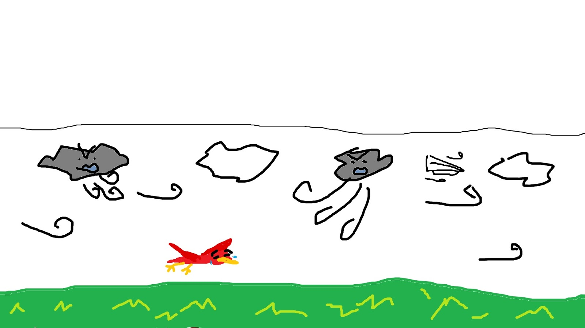
One cloudy morning, Chirpy woke up and stretched his wings big and wide.
Whoosh!
All of a sudden, a strong gust of wind rushed on Chirpy’s wings.
His legs wobbled and wings tremored; He’s falling from the nest!
Chirpy closed his eyes in terror. He tried to think of what to do but the falling froze his mind!
At the last second, he did what felt natural, and spread his wings wide open.
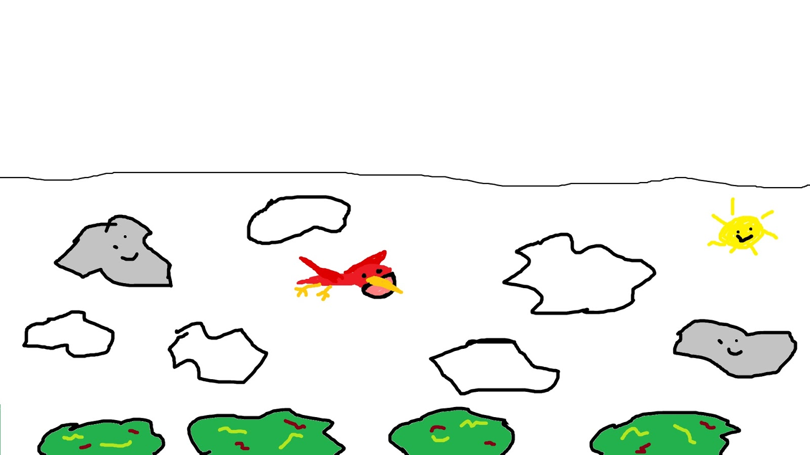
When chirpy opened his eyes, he saw that he was flying!
The more he flapped, the higher he went!
He saw the tops of the forest trees,
And the fluffy clouds above him!
However, now he could do what he wanted to do most!
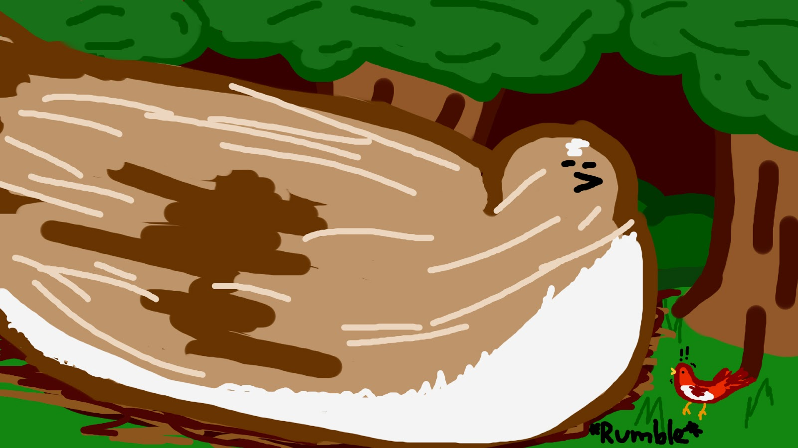
Chirpy dove into the neighborhood and searched for other birds like Majesty.
And there, he saw, a huge bird with a nest on the ground.
The huge bird noticed him, and tweaked excitedly.
Chirpy landed on the ground in a jumble and looked up at the big bird.
The huge bird tweaked, “You must be the new bird, chirpy!” His voice boomed and shook the ground
Chirpy asked, “how did you get so big…!”
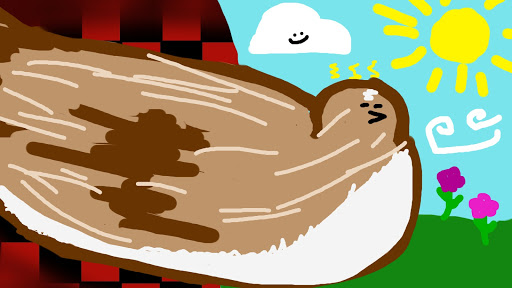
“Let me tell you my introduction poem!”
I am Zord, a hefty one
Enormous, but mighty fun
I play checkers,
Hop-scotch peckers,
But in truth, I’ve never won
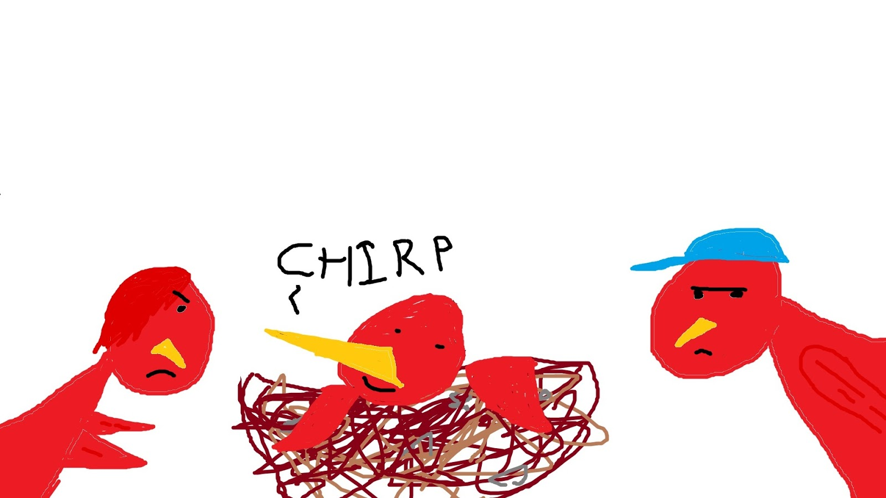
Chirpy looked in awe.
Zord tweaked, “we should play checkers sometime Chirpy!
But for now, you should go home. Your parents are probably worried!”
And so, Chirpy went home, and tweaked excitedly to his worried parents.
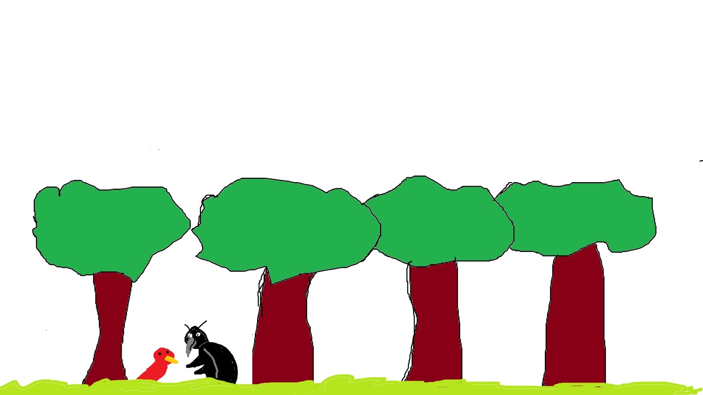
The next day, Chirpy woke up really early.
He needed to see the other birds!
Chirpy lifted his wings and steadily glided through the morning air.
With a squint of his eyes, he spotted a pitch black crow with a cloak lurking in the shadows.
Chirpy landed steadily in front of the crow.
The crow looked both ways and tweaked, “hey, got any twigs?”
Chirpy tilted his head in confusion. “Who are you?” asked Chirpy.
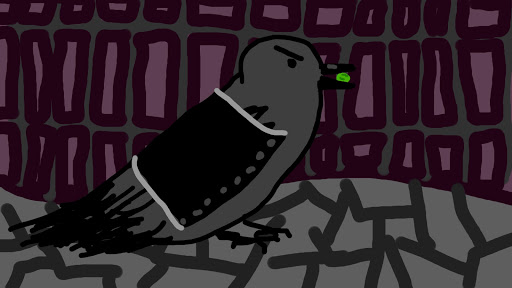
The pitch black crow made a long sigh and started singing,
“Sketchy is my business name
I trade peas as a con game
Unreliable,
Never liable,
And not with an ounce of shame.”
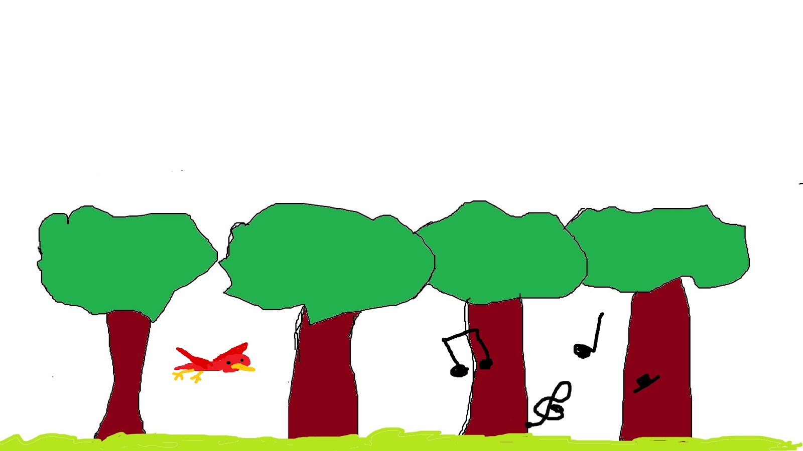
Chirpy tilted his head in confusion.
“Well, got any?” The crow asked.
Chirpy shook his head and the raven flew away, making a c-caw noise.
Chirpy then heard a faint echo of a song and decided it might be a new bird.
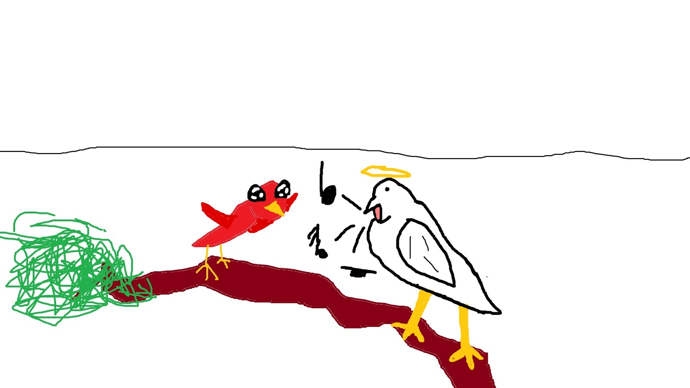
He flew and flew towards the music as it became louder and louder.
Then, he finally saw a beautiful white dove.
The dove’s eyes were closed as he sang enchanting melodies that soothed the heart of Chirpy.
When the dove was finished, he opened his eyes and smiled.
He saw Chirpy with a wide grin. Chirpy quickly asked, “what’s your poem?”

A white tails subtle reflection
Inspires moon night’s perfection
Elegant ease
Blows a fresh breeze,
Pushing my wings with direction
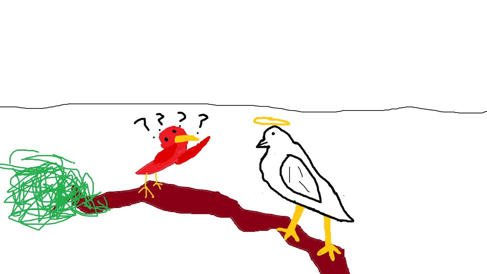
Chirpy sat there in awe.
The dove tweaked, “What’s your poem, little one?”
Chirpy never thought of it before. What was his poem?
He thought of every poem he liked so far, and he decided to try and make one.

Chirpy tweaked, “ Reflections splash on my red,
I’m little, but I am fed
Elegant flaps,
With tiny gasp.
I’ve no shame that, uhh, cornbread!
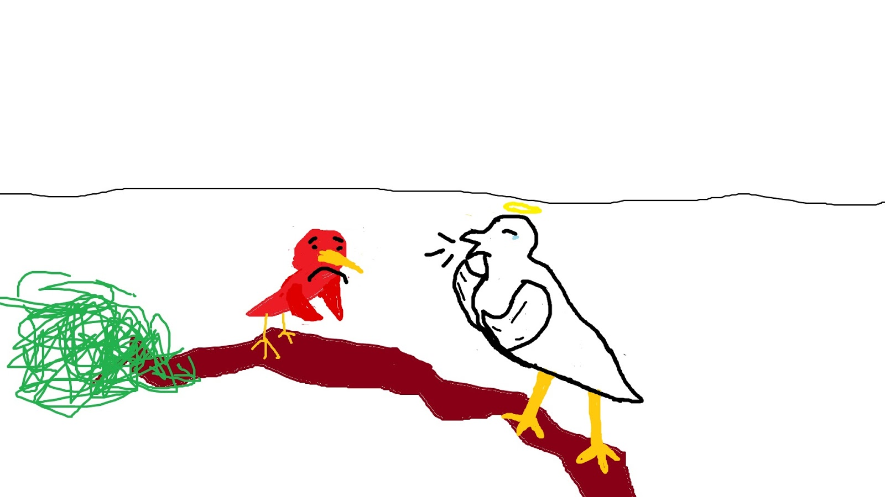
The dove laughed for a minute and tried to regain his composure.
Chirpy was uncomfortable, he thought the dove was laughing at him!
The dove tweaked, “You’re a funny one Chirpy. Why don’t you go to your nest and make a poem! Think about yourself
this time, not the other birds in the neighborhood!”
Chirpy smiled and nodded his head. He lifted himself and flapped back to the nest.
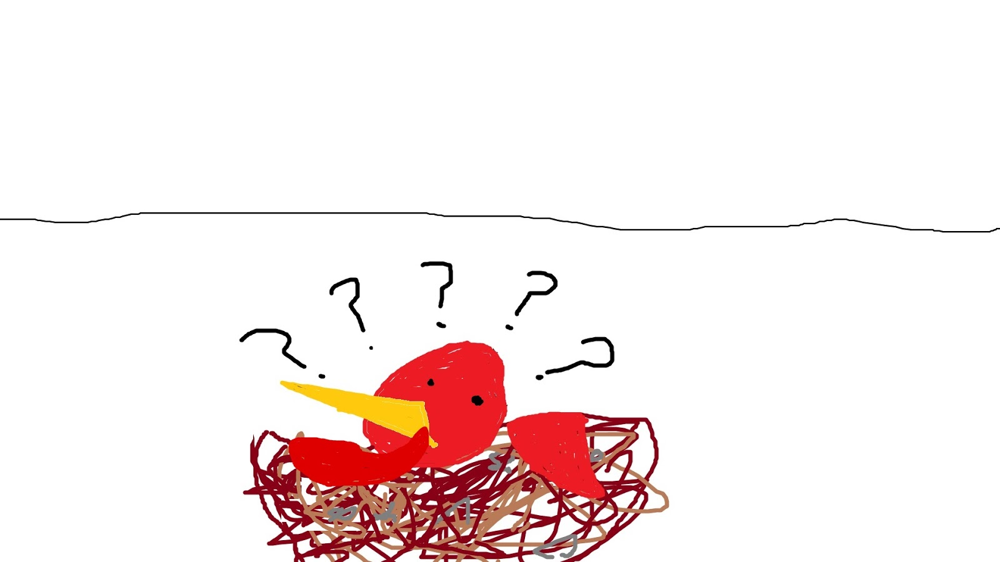
Chirpy thought long and hard about himself.
Who was he?
What did he enjoy?
After long thought, Chirpy created his poem!
It was the dusk of morning so he decided to sing it to his parents first.

“Red is the color of my feather,
And I love to hang out together
Chirpy is my name
And I love to game
I’ll always be seen in fair weather!
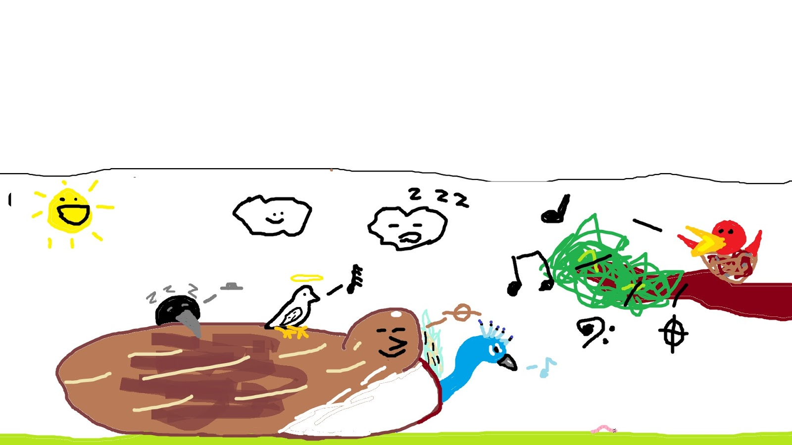
Mama and papa bird excitedly pet Chirpy.
Papa decided to get all the birds in the neighborhood together to hear Chirpy’s poem! And so, all the birds Chirpy
met circled around him.
Chirpy was nervous! With a big breath, Chirpy began to sing his poem.
When Chirpy was finished, they all tweaked at him and they did something unexpected… They all were singing his
poem!
Majesty, Zord, Sketchy—even the white dove was singing it!
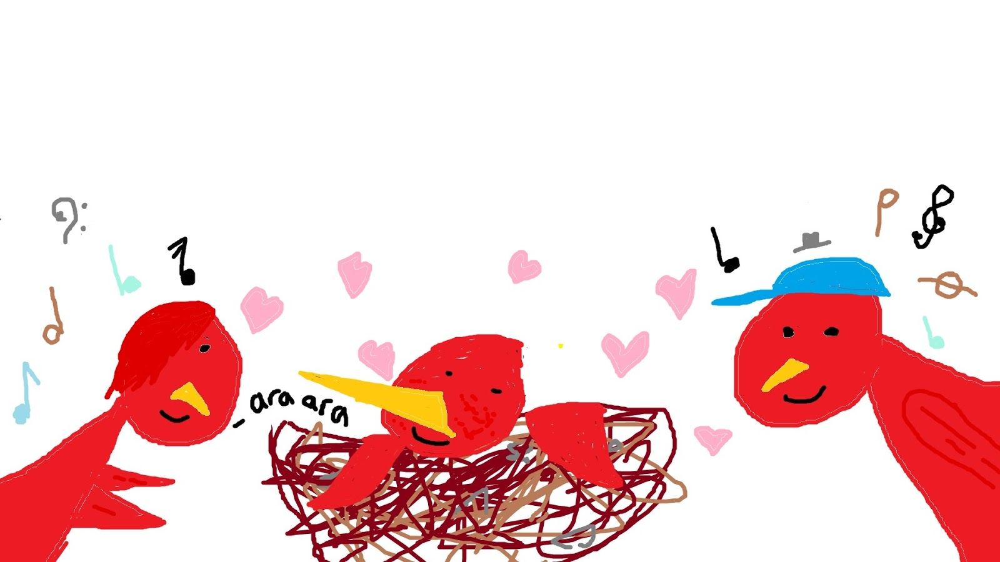
The day went on, and the birds still sang his poem throughout the day. Chirpy was happy, all the birds loved him for
who he was. At the end of the day, Chirpy fell asleep with love in his heart and the warmth of his parents beside
him.
The End.